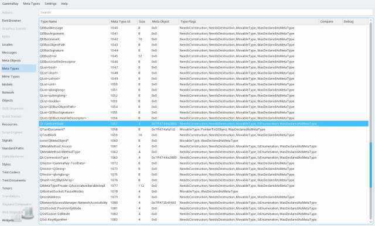

The meta type browser shows all types registered with QMetaType, and the information registered for them.

The meta type view can show the following information, some columns might only be available in newer Qt versions though.
On types with an associated QMetaObject, the context menu allows navigation to the corresponding entry int the Meta Object Browser.
If the target registers types later during application runtime, it might become necessary to manually trigger a scan for new meta types, the Meta Type menu contains a corresponding action for doing this.